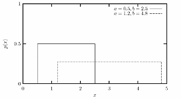
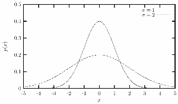
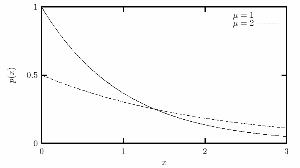
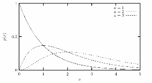
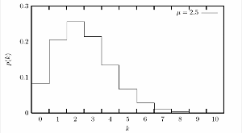
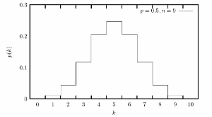

A distribution function can be described by a density function: The probability that a specific value will occur. Non-uniform distributions are almost always computed starting with a uniform distribution. There are several different approaches. Sometimes one just applies a mathematical transformation. In other cases, more complex algorithms must be used.
Below are a few plots showing examples of non-uniform probability distributions often used in connection with RNGs.
Uniform distribution |
Normal (Gaussian) distribution |
Exponential distribution |
Gamma distribution |
Poisson distribution |
Binomial distribution |